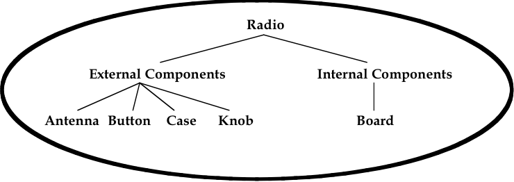
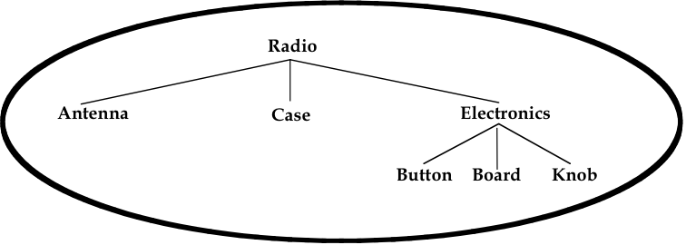

4. Organizing the Structure
Taking the time to map out a tree structure of an object before building it is another important step in the modeling process, especially if the object being constructed is elaborate, if modeling time and resources are limited, if the work is being performed as a team, or if the model will be passed on to someone else later.
If we consider the construction of a house, we know that builders do not actually build houses; they build pieces of a house until the completed structure emerges. Furthermore, these pieces are not usually built in a random order. Rather, a good builder (often as part of a team of carpenters, masons, electricians, plumbers, etc.) follows blueprints or drawings that group the pieces into categories based on their functionality (e.g., framing, wiring, plumbing, etc.) or location (e.g., basement, bedroom no. 1, kitchen, etc.).
The modeling process can be thought of in much the same way. Before anything is built, a modeler should take on the role of an architect and lay out a logical way to break down a potentially complicated object into smaller, more manageable pieces. Also, this step can often reveal a logical building order (e.g., the drywall does not get installed until the wiring inside the walls has been run) as well as identify important interconnections among parts.
The following list provides some tips to achieve good model structuring:
-
Use a top-down approach: It is a good idea to design the structure using a top-down approach, beginning with the largest, most encompassing, or most functionally significant parts/systems and working down from there. Once again, the model’s mission is all-important here. If an armored tank is being modeled for a ballistic analysis, the model should probably be structured so that all the pieces connected to the turret are grouped together and, therefore, can move together when the turret is rotated.
-
Take advantage of established organizational conventions: It is wise to follow any traditional or widely used conventions that might be available in, say, an owner’s or operator’s manual. If a mechanic or user would normally expect a particular component to be part of a suspension system, then it is wise for the modeler to structure his model accordingly unless there is a good reason to do otherwise.
-
Use good naming practices: Closely associated with the idea of using good organizational conventions to structure geometry is the idea of using good naming conventions to name geometry. Although naming may appear to be a trivial matter, the fact is that it is not always easy to establish titles and schemes that are intuitive, robust, and useful in helping the end user know where he is in a potentially complex model.
There are few limitations to how files and objects can be named in BRL-CAD (other than that each file/object name must be unique). However, new modelers soon find that random or haphazard naming schemes lead to inefficiency and frustration. Thus, the following general recommendations are provided to help modelers efficiently organize and track what they build.
-
Develop logical schemes, stick to them, and document them: If logical or obvious titling schemes (such as a manufacturer’s part names or numbers) are already in place, the user should take advantage of them, especially at the highest assembly levels of "complete" or aggregated objects and especially when multiple modelers are involved. This practice helps establish a logical structure (e.g., all engine parts have a prefix of, say, eng), and many users may already know these names.
Table 3 provides examples of a number of other logical naming conventions traditionally used in BRL-CAD. These conventions include (1) an initial nametag to designate shape/object type or function (i.e., sph for sphere, ant for antenna, and frf for front face); (2) a suffix (or prefix) to designate MGED object type (i.e., .s for primitive shapes [formerly referred to as "solids"], .r for regions, .c for shape combinations, and .a or .g for assembly combinations); and (3) some sort of sequential numbering scheme (i.e., 1, 2, 3, etc.). For more information on BRL-CAD shapes and modeling levels, see Section 5, as well as Lesson 5 and Appendix C of BRL-CAD Tutorial Volume II (Butler et al., 2001).
Table 1. Examples of naming conventions. Name Rationale sph.s1, sph.r1, sph.c1
Associates the name with primitive shape type (sphere), order of creation (1), and MGED object type (shape [.s], region [.r], or combination [.c]). Often used for training or testing BRL-CAD functionality but not recommended for large, complex models[1]
ant.s1, ant.r1, ant.c1
Associates the name with type of function (antenna), order of creation (1), and MGED object type (shape [.s], region [.r], or shape combination [.c]).
frf.s1-1, frf.s1+1, frf.s1
Associates the name with function (front face), MGED object type and order of creation (.s1), and type of Boolean operation performed (subtraction [−] and intersection [+]). [2] This is the notation currently used with the Build Pattern tool.
front_face.a, right_antenna.a, left_roadwheel.a
Gives the assembly combination levels (.a) more descriptive titles to better designate overall model composition and/or functionality for the end user.
Driver Main_Gun M1A1
Gives top-level assemblies human-readable descriptions of overall composition and/or functionality. Uses initial capitalization to show higher tree level and disregards traditional MGED suffix.
Note that the suffix at the end of names is particularly useful for searching for similar items in large tree structures and for using MGED automation features such as the Build Pattern tool and the build_region command (see Appendices E and F).
-
Keep names short: Prior to BRL-CAD release 6.0, all BRL-CAD names were limited to 16 characters. In some respects, this "limitation" was useful, compelling new modelers to resist the common urge to name primitives with as much detail as possible. Although the length restriction no longer applies, it is still a good idea, especially in large models (and with frequently used objects), to keep names of objects as short as possible so as to reduce the amount of typing the modeler must do and, thus, reduce the possibility for input errors. In addition, some vulnerability analysis codes do not support names longer than 16 characters.
As shown in Table 3, an exception to the practice of keeping names short includes the names at the assembly combination level and above, where fewer names are used and more descriptive titles can be helpful in designating overall model composition and structure for the end user.
-
Establish "reserve" names: In projects that involve multiple modelers developing different pieces of the same geometry, it is helpful in some cases to reserve particular name designations to avoid possible confusion. For example, a team of modelers developing an armored vehicle might choose to reserve the letter "h" to denote the "nametag" for only those components associated with the hull (e.g., "h.s1," "h.s2," etc.). This would mean that those modelers building, say, headlight assemblies would have to choose another designation (e.g., "hlght.s1," "hlght.s2," etc.). This standardization can also be helpful in establishing common terminology for later projects with the same or similar components.
-
Avoid using certain letters and symbols: To avoid potential problems associated with common UNIX notation, searching schemes, and certain survivability, lethality, and vulnerability (SLV) analysis codes, the following recommendations (or, in some cases, requirements) are made regarding the use of keyboard characters in BRL-CAD names:
-
Use lowercase Arabic letters (except for the previously mentioned initial capitalization used for top-level assemblies).
-
Use numerals without internal commas (e.g., "5000" not "5,000").
-
Avoid using numerals to begin a name.
-
Do not use a space between words; use an underline or capitalize the first character of each word (i.e., Hungarian notation).
-
Avoid using special characters. Restrict the use of "+" and """ symbols to the suffix of primitive shape combinations, and do not use the "/".
-
Restrict the use of the period to the suffix of MGED object types. Avoid using other punctuation (e.g., "?," "!," etc.).
-
Avoid using the lowercase letter "l" by itself (to avoid possible confusion with the number "1").
-
-
-
Include the right amount of detail: The structure should only be as deep as needed for the application. Obviously, every part, no matter how complex, could in theory be reduced down to the atomic or even subatomic level, but how cost efficient and useful would this be? More is not necessarily better. The modeler should use common sense and consult with the end user(s) when deciding how far to break down components and systems. Insufficient detail can diminish the model’s usefulness and reduce user confidence, and yet too much detail can unnecessarily drain time and resources, slow down processing time of application codes, and frustrate users who have to wade through many parts that they do not need to get to what they do need.
Note that it is not unusual for a modeler to select relatively arbitrary names when shapes and parts are first made and then go back and rename them as the model develops. There are two commands to rename database objects.
To rename only the database object, type the following:
mv oldname newname
Note that this command changes only the name of a particular object and not any references to the object that may occur in combinations throughout the database.
To change an object’s name and all references to that object, the mvall (move all) command can be used as follows:
mvall oldname newname
-
Use location- and function-based groupings: Components should be grouped based on simple, logical categories such as location and/or functionality. For example, the structure of the simple radio that was built in Lesson 16 of Volume II of the BRL-CAD Tutorial Series (Butler et al., 2001) could be set up in several ways. Figure 4 shows a structure based on location, and Figure 5 shows a structure based on functionality.
Figure 1. Location-based structure of the radio in Volume II.Figure 2. Function-based structure of the radio in Volume II.The structuring phase, of course, gets trickier and more subjective as the model gets more complex. Regardless of whether the structure is based on location, function, or something else, it is not always clear which parts belong to which structures. In fact, some parts are clearly designed to interface between parts or systems, and so the modeler must choose where he should place them in the tree structure. A consistent treatment of these parts within the model is an important part of the user’s ability to understand and use the model.
It is also important to remember that the tree structure in MGED is independent of the geometry created. The structure is simply a tool to help the user organize and work with the database. Accordingly, the tree structure can be manipulated to suit whatever needs the user(s) may have. Consider the example of a model of a room containing a table and a cup on top of the table. If one wanted to relocate the table (along with the cup) next to a wall, one could create a temporary combination containing the table and the cup. This combination could then be used to move the two objects together to their new location. After the objects are in position, the temporary combination could be "pushed" (see discussion of the push command in Section 5) and then deleted using the kill command (see Appendix A of Volume II [Butler et al., 2001]).
temp, is recommended.